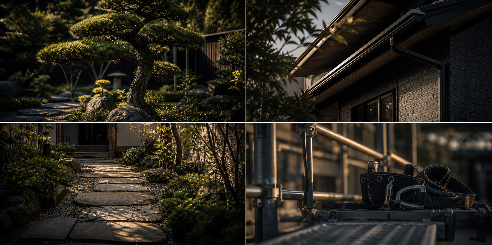
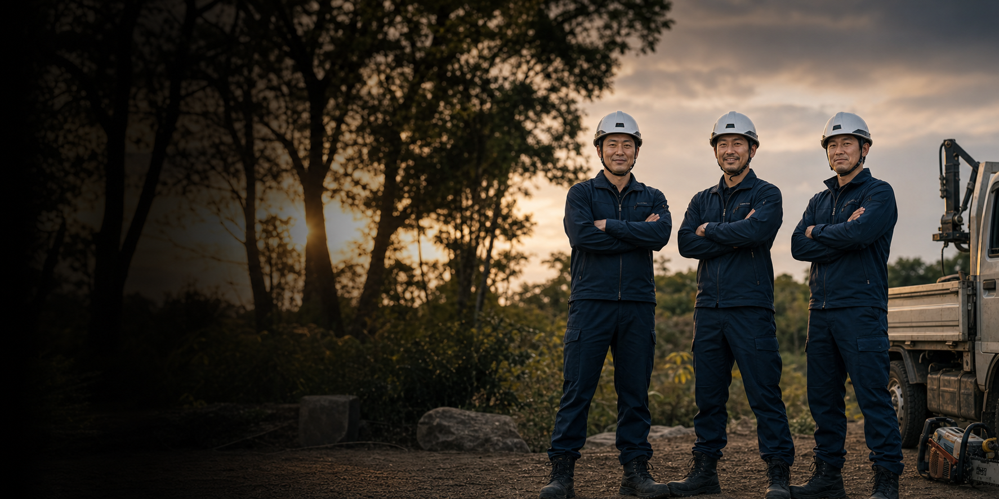

掲載候補 01
掲載候補 01
伐採抜根の現場
安全への配慮、作業前の段取り、作業後の整え方が伝わる写真を優先します。
Works
施工実績は、取引先への信用と問い合わせにつながる重要なページです。実写真・現場名・掲載許可がそろったものから順次掲載します。
Current Status
実際の現場写真に差し替えたとき、強みが伝わるように、カテゴリ、課題、対応内容、仕上がりを整理しておきます。
掲載候補 01
安全への配慮、作業前の段取り、作業後の整え方が伝わる写真を優先します。

掲載候補 02継続的に任されている管理地や、定期対応の信頼が伝わる現場を掲載候補にします。
見た目の変化、使いやすさ、施工後の管理しやすさが分かる写真を使います。

掲載候補 04安全性、作業性、現場対応力が伝わる案件を掲載候補にします。
Evidence
写真だけでなく、どんな課題にどう対応したかまで見せると、取引先の信用確認に強くなります。
伐採、年間管理、剪定、外構、足場、防草シートなど、何の仕事かを明確にします。
危険木、雑草管理、見た目、作業導線、安全性など、相談の背景を整理します。
段取り、近隣配慮、作業中の注意、仕上げまで、信頼につながる行動を見せます。
公開許可を得た写真だけを使い、現場名や個人情報の扱いに注意します。
Next
先方確認用は仮写真のまま、公開前に実写真と掲載許可を確認します。